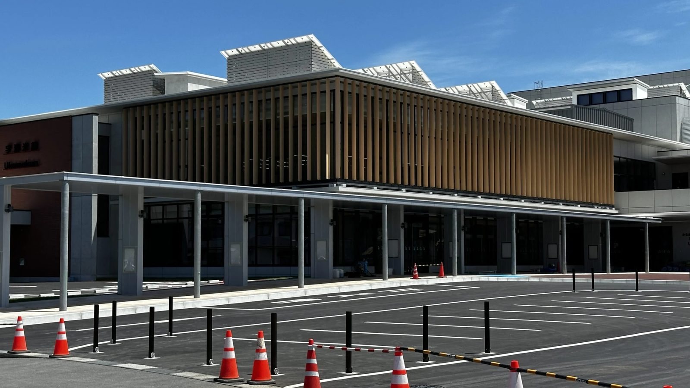
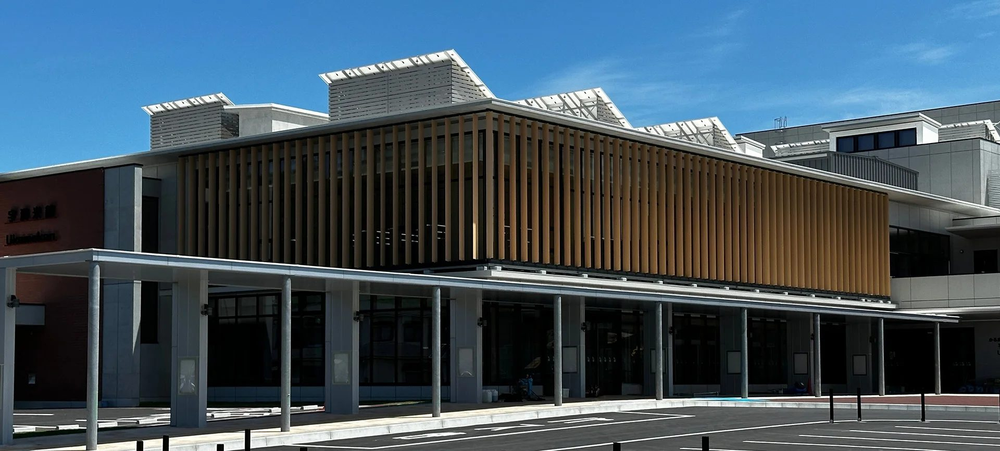
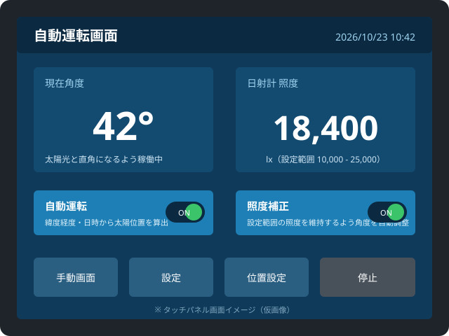
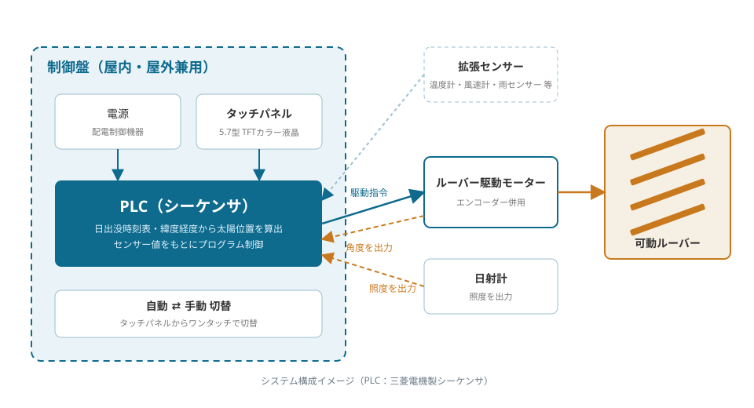
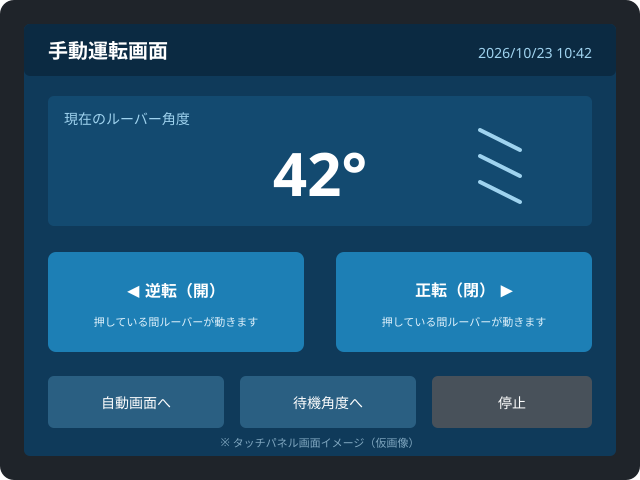
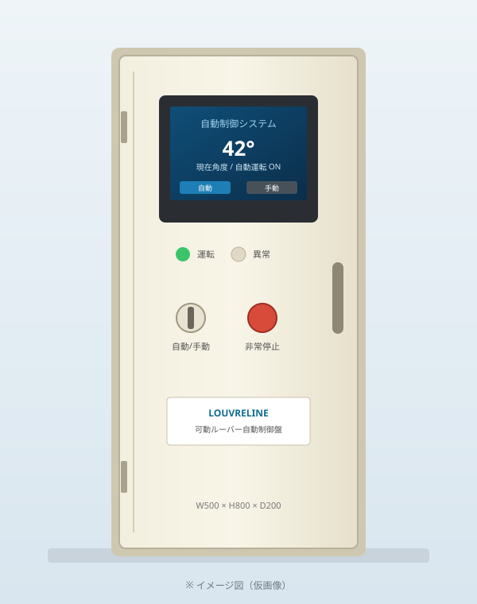

日本古来の伝統技術を継承した採光や通風を、
自動でコントロール。可動ルーバーは進化します。
可動ルーバーは、日本古来の伝統技術を活かして採光や通風をコントロールする建材です。ルーバーを開けて自然の光や風、景色をとり込み、ルーバーを閉じて紫外線や雨、風、視線を防ぎます。カーボンニュートラルの達成に向けて建物の省エネ化が求められる中、当社の製品は大型施設から一般的な戸建て住宅に至るまで幅広く採用されています。2020年には、3社の共同開発による製品がグッドデザイン賞を受賞しました。
365日カレンダー × 気象条件で動く、新しい可動ルーバー。

自動コントロールタイプ 誕生 業界初
気象状況に応じてリモコンでの開閉が不要な365日自動制御に、独自センサーを加えた、理想を実現した新しいルーバーです。
の4つの機能は据え置き。可動ルーバーの良さはそのままに、自動制御で快適さと省エネを両立します。
| 条件 | 外部・室内の状態 | ルーバー | 室内 | |
|---|---|---|---|---|
| 太陽光による変化日射計 | 外が明るい | → | 閉 | トーンダウン |
| 外が暗い | → | 開 | トーンアップ | |
| 温度による変化サーモセンサー | 室内温度 上昇 | → | 閉 | 温度上昇を抑制 |
| 室内温度 下降 | → | 開 | 日射を採り入れる | |
| 室内照度照度計 | 明るい | → | 閉 | 眩しさを低減 |
| 暗い | → | 開 | 採光を確保 |
太陽の位置・天候に合わせて
ルーバーの開閉を自動制御
制御盤内に取り付けられたPLC（プログラマブル・ロジック・コントローラ／三菱電機製シーケンサ）が、日出没時刻表を基本動作として、設定された緯度・経度と現在の日時から太陽の位置を算出。ルーバーが太陽光と直角になるように稼働し、季節や時間によって変化する日射を365日自動で遮蔽します。暗い日は日射計が感知して採光する「照度補正」機能付きです。

エンコーダーによる高精度な角度制御と、
センサーによる拡張性
ただ開閉するだけではなく、モーターを細かく制御してルーバーの角度を調整するためにエンコーダーを使用。正確かつ細かな角度設定が可能です。「ピラノメーター（日射計）」や「サーモセンサー（温度計）」などの拡張性を持たせることで、採遮光条件をより細かく設定できます。

タッチパネルで、
自動・手動の切り替えもワンタッチ
新たに導入したタッチパネル（三菱電機製 5.7型TFTカラー液晶）により、自動運転と手動運転の切り替えが容易になりました。手動画面ではボタンを押している間だけルーバーが正転・逆転し、現在の角度を表示。設定画面では制御の開始・終了時間、照度の設定範囲、調整間隔、待機角度、最大角度などを建物ごとに細かく設定できます。

屋内・屋外兼用の制御盤。
既設の電動ルーバーにも対応
制御盤は屋内・屋外兼用の鋼板製キャビネット。水切構造・防塵・防水パッキンを備え、屋外設置にも対応します。駆動装置は自社開発のため、新築はもちろん、既設の電動ルーバーへの自動制御システムの追加についてもご相談ください。
| キャビネット寸法 | W500 × H800 × D200（mm） |
|---|---|
| 材質 | ボデー・ドア：鋼板 t1.6／基板：鋼板 t2.3 |
| 色 | クリーム（2.5Y9/1） |
| 構造 | 屋内・屋外兼用、水切構造、防塵・防水パッキン |
| タッチパネル | 三菱電機 TFTカラー液晶 5.7型（表示サイズ W115.2 × H86.4） |

PLCを活用した、ルーバー自動開閉システムの構成
システム構成は、制御盤内のPLCに日出没時刻表を基本動作設定とし、「ピラノメーター」や「サーモセンサー」などの拡張性を持たせることで採遮光条件をより細かく設定することができ、「エンコーダー」を使用することで高精度な制御を実現するシステムです。
可動ルーバー
電動機によりルーバーを可動させます。新たに導入したタッチパネルにより自手動の切り替えが容易となります。
ピラノメーター（日射計）
必要な照度を確保するためルーバーを細かく制御。曇りなどで採光が難しいときは通常よりも入光しやすい状態へと対応します。
サーモセンサー（温度計）
日差しが強く室温が上昇する夏季には基本設定よりも遮光して温度上昇を抑制し、冬季は採光をすることで快適性を高めます。
エンコーダー
モーターを細かく制御しルーバーを調整するためにエンコーダーを使用。正確かつ細かな設定が可能となります。
ご要望に応じた機能追加（オプション）
以下のような機能追加は、ご要望に応じて検討・対応が可能です。
- 日射計
- 温度計
- 風速計
- 雨センサー
- 湿度計
- エアコンとの連動
- 外気冷房との連動
- その他ご相談
自動化による主なメリット
- 従業員の操作負担を軽減日々の開閉操作が不要になり、本来の業務に集中できます。
- 人的判断に伴うリスクを低減責任の所在や判断のばらつきをなくします。
- 確実な運用開閉管理を自動化することで、確実な運用が可能になります。
電気代は1台あたり約100円/日程度。手動への切り替えも可能です。
自由に開度を調節でき、眺望からプライベート空間まで、多彩なシーンに対応する可動ルーバー。視線と日射しをコントロールし、防犯にも貢献。採光や防風・防雨機能も備え、家庭から商業施設、医療・教育施設までの環境改善に寄与します。"目隠し"、"採光"、"通風"、"日よけ"の4つの機能を一つに結集した製品が、ルーバーラインの可動ルーバーです。その多機能性と信頼性が、幅広いシーンで可動ルーバーが選ばれ続けている理由です。
光の調整
室内の明るさ・温度を自由自在に調節できます。西日対策のほか、商品の日焼け防止に効果的です。
直射日光の遮断
地域や季節による日照角度を考慮し、可動式ルーバーで最適な角度を設定。一年中、快適な室内空間を維持できます。
雨の防止
雨から洗濯物・草花・ペットを守ります。窓の外に設置してあるのでシャッターの役目も果たします。
プライバシー
屋外からの視線を遮りプライバシーを保護し、コミュニケーションスペースを確保します。
天候に合わせた調整
降雨時には雨の浸入を防ぎ、日差しの強い晴天時には直射日光を遮って温度上昇を防止します。
防犯性アップ
可動式ルーバーは視線を遮りながら窓を閉じ、防犯対策への対応力を強化します。自由に調節できるルーバーが安全と安心をサポートします。
高いデザイン性
アルミニウム押出成形型の美しいフォルムと、連続性のある直線形状により高いデザイン性を発揮。カラーリングも自由に施せます。
防犯性能
ルーバーは外部から取り外しできないように設計。全閉時にはシャッターのように全面を覆って窓ガラスを護ります。
受注生産と自由設計
お客様のニーズに対応可能な製品ラインナップをご用意。受注生産により、建物にマッチした製品をご提供します。
調整性能
施設内の明るさと温度を自由自在に調整。直射日光の遮断、雨風からの保護、外からの視線の遮断でプライバシーを守ります。
優れた省エネ性
窓の外で日射を遮蔽するため夏季には高い断熱性能を発揮。屋内への熱量遮蔽性能はブラインドの3倍。冬季は日射を採り入れ暖房費を削減します。
環境負荷の低減
ほとんどの部材にアルミニウムを使用してリサイクル性を確保し、環境負荷を低減します。
対象の建物
規模・種別を問わず開発・設置が可能です。教育・研究機関や展示館などの大型施設から、一般の戸建て住宅まで幅広くご利用いただいています。
製品ラインナップ
| Airfoil 210 ヨコライン | 翼型断面の横型可動ルーバー。事務所・研究施設・商業施設の窓面に。木目調転写塗装などのカラーリングに対応。 |
|---|---|
| Aerofoil 330 タテライン | 大判の縦型可動ルーバー。文化施設・医療施設など、連続する縦のラインで建物の顔をつくります。 |
| 可動ルーバー自動制御システム | PLC・エンコーダー・タッチパネルで構成する自動制御盤。365日タイマー式を基本に、日射計・温度計などのセンサーを追加可能。 |
| 駆動装置 | 軽量なルーバーから重量のあるルーバーまで対応する自社開発の駆動装置。既設ルーバーの電動化・自動制御化もご相談ください。 |
※ 製品は受注生産です。仕様・寸法・カラーは建物に合わせて設計いたします。詳しくはお問い合わせください。